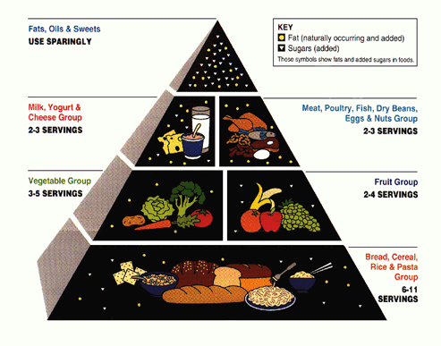
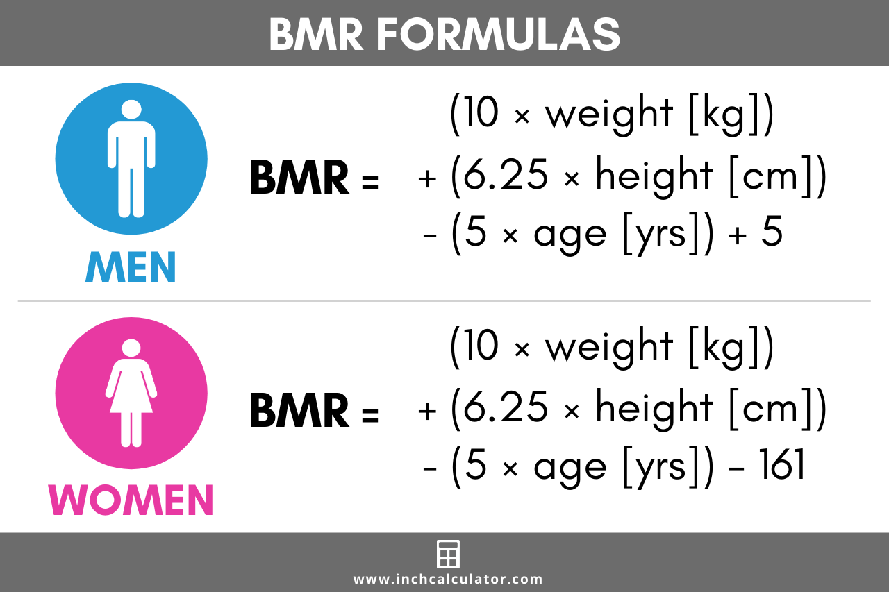
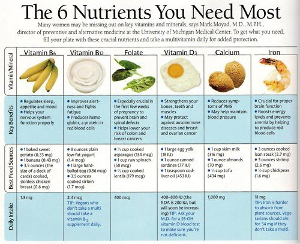

The human body can be thought of as an engine that releases the energy present in the foods that it digests. This energy is utilized partly for the mechanical work performed by the muscles and in the secretory processes and partly for the work necessary to maintain the body’s structure and functions. The performance of work is associated with the production of heat; heat loss is controlled so as to keep body temperature within a narrow range. Unlike other engines, however, the human body is continually breaking down (catabolizing) and building up (anabolizing) its component parts. Foods supply nutrients essential to the manufacture of the new material and provide energy needed for the chemical reactions involved.
The energy present in food can be determined directly by measuring the output of heat when the food is burned (oxidized) in a bomb calorimeter. However, the human body is not as efficient as a calorimeter, and some potential energy is lost during digestion and metabolism. Corrected physiological values for the heats of combustion of the three energy-yielding nutrients, rounded to whole numbers, are as follows: carbohydrate, 4 kilocalories (17 kilojoules) per gram; protein, 4 kilocalories (17 kilojoules) per gram; and fat, 9 kilocalories (38 kilojoules) per gram. Beverage alcohol (ethyl alcohol) also yields energy—7 kilocalories (29 kilojoules) per gram—although it is not essential in the diet. Vitamins, minerals, water, and other food constituents have no energy value, although many of them participate in energy-releasing processes in the body.

Basal metabolic rate (BMR) is the rate of energy expenditure per unit time by endothermic animals at rest. It's reported in energy units per unit time ranging from watt (joule/ second) to ml O2/ min or joule per hour per kg body mass J/ (h · kg). Proper size requires a strict set of criteria to be met. These criteria include being in a physically and psychologically unperturbed state and being in a thermally neutral environment while in thepost-absorptive state ( i.e., not actively digesting food). In bradymetabolic animals, similar as fish and reptiles, the original term standard metabolic rate (SMR) applies. It follows the same criteria as BMR, but requires the documentation of the temperature at which the metabolic rate was measured. This makes BMR a variant of standard metabolic rate dimension that excludes the temperature data, a practice that has led to problems in defining" standard" rates of metabolism for numerous mammals.
The basal metabolic rate (BMR), a precisely defined measure of the energy expenditure necessary to support life, is determined under controlled and standardized conditions—shortly after awakening in the morning, at least 12 hours after the last meal, and with a comfortable room temperature. Because of practical considerations, the BMR is rarely measured; the resting energy expenditure (REE) is determined under less stringent conditions, with the individual resting comfortably about 2 to 4 hours after a meal. In practice, the BMR and REE differ by no more than 10 percent—the REE is usually slightly higher—and the terms are used interchangeably.
The energy costs of various activities have been measured (see table). While resting may require as little as 1 kilocalorie per minute, strenuous work may demand 10 times that much. Mental activity, though it may seem taxing, has no appreciable effect on energy requirement. A 70-kg (154-pound) man, whose REE over the course of a day might be 1,750 kilocalories, could expend a total of 2,400 kilocalories on a very sedentary day and up to 4,000 kilocalories on a very active day. A 55-kg (121-pound) woman, whose daily resting energy expenditure might be 1,350 kilocalories, could use from 1,850 to more than 3,000 total kilocalories, depending on level of activity.

The six classes of nutrients found in foods are carbohydrates, lipids (mostly fats and oils), proteins, vitamins, minerals, and water. Carbohydrates, lipids, and proteins constitute the bulk of the diet, amounting together to about 500 grams (just over one pound) per day in actual weight. These macronutrients provide raw materials for tissue building and maintenance as well as fuel to run the myriad of physiological and metabolic activities that sustain life. In contrast are the micronutrients, which are not themselves energy sources but facilitate metabolic processes throughout the body: vitamins, of which humans need about 300 milligrams per day in the diet, and minerals, of which about 20 grams per day are needed. The last nutrient category is water, which provides the medium in which all the body’s metabolic processes occur.
A nutrient is considered “essential” if it must be taken in from outside the body—in most cases, from food. (See table.) These nutrients are discussed in this section. Although they are separated into categories for purposes of discussion, one should keep in mind that nutrients work in collaboration with each other in the body, not as isolated entities. 